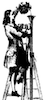

Pensées on Pensées
Blaise Pascal’s Pensées is a difficult read. Not difficult because of the loftiness of the subject or the style of writing but because it is bad. The book is written as a series of aphorisms that sometimes get elaborated on. That style of writing can be criticized for being hard to follow. Writing on an idea so briefly can make it difficult to follow a thought’s full implications and we the reader often need to be led down the path the writer wants to take us.
My criticism of Pensées is not that it is hard to follow. I actually think brevity is good when making a philosophical point. Pascal understood this form of writing well enough. The problem is that the whole work is a series of notes Pascal was writing to himself about himself.
Every time Pascal makes observations about people they seem like observations about himself. This seems like a series of fragments from reflections where Pascal talks to Pascal to convince Pascal. Actually if he had just been more blatant it might have made for a more interesting read.
The problem of taking your own experiences as a general experience is that you miss out on important insights. There are things to be noticed if we don’t insert ourselves and just observe. Still there is a lot to observe about ourselves and learn as well. So a book that was just more direct about its subject and purpose would’ve been more informative. Instead it is just somewhat wrong.
I do not understand the praise Pensées receives. According to History of Philosophy: Descartes to Leibniz it’s a book that can be considered his life’s work. His life’s work? No way. A man so talented in his scientific and mathematical thinking produced this? How? It’s like finding out Einstein couldn’t tie his shoes (this is a joke, he could tie his shoes).
Read Pensées or don’t. Maybe I don’t “get it.” I’ve lost any interest in reading more Pascal. Then again it definitely wasn’t written for an epicurean atheist. Maybe you are Pascal reincarnated and you’ll “get it.” 